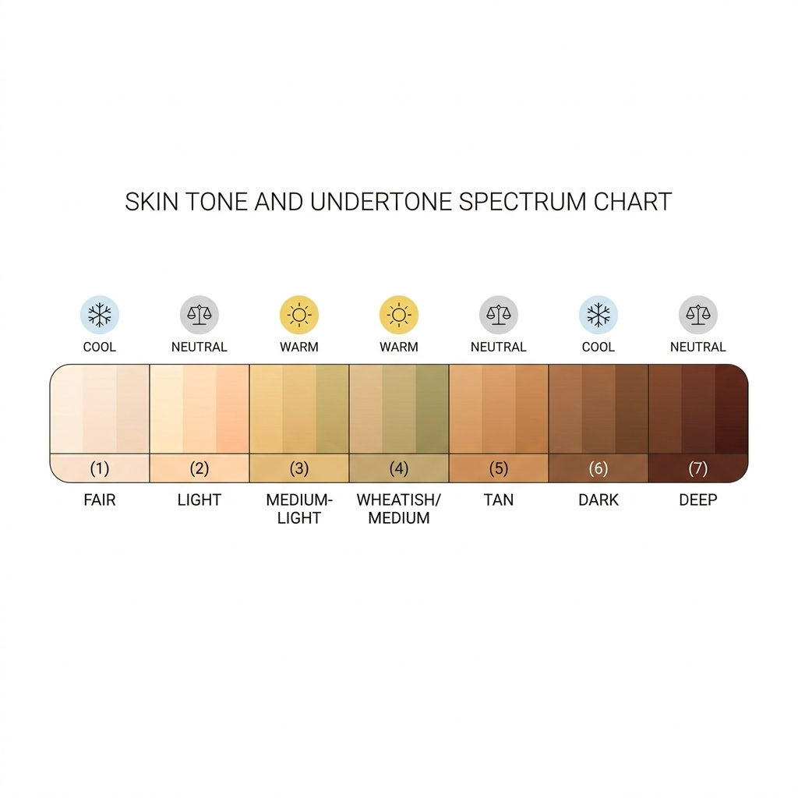

Last updated: July 14, 2026
The Complete Guide to Indian Skin Tones and the Colours That Suit Them
Quick answer: Indian skin tones range from fair to deep, and separately, each can lean warm, cool, or neutral in undertone. About 70% of Indian skin leans warm, but depth and undertone are independent — a fair complexion can be warm, and a deep complexion can be cool. Getting your colours right means matching both, not just one.

Two Things That Are Often Confused
Most "Indian skin tone" guides online only talk about depth — fair, wheatish, dusky, deep — and skip undertone entirely. But two people can share the same depth and have completely different undertones, which is why the same "recommended" colour can look great on one person and dull on another with a supposedly similar complexion. This guide treats both separately.
Fair Skin Tones
Fair Indian skin, common through the north and hill regions, most often leans cool or neutral, though warm-fair complexions exist too (especially through Kashmir and parts of the northeast).
- If cool: berry pink, deep red, emerald, amethyst, silver metals
- If warm: peach, coral, warm pink, gold metals
- Colours to approach carefully: very pale pastels can wash out a fair-cool complexion; avoid stark icy tones if you lean warm
Wheatish / Medium Skin Tones
The most common band across India, especially central and western regions, and typically warm-leaning with olive undercurrents.
- Mustard, rust, turquoise, warm greens, terracotta
- Gold jewellery generally edges out silver
- This band tends to be the most flexible — most colours work; the main thing to avoid is anything too dull or greyed-out
Dusky Skin Tones
Rich, deep undertones that carry bold, saturated colour exceptionally well.
- Fuchsia, cobalt blue, emerald green, deep maroon, wine, plum
- Gold and copper metals typically suit best
- Colours to approach carefully: brown-on-brown combinations can blend in rather than contrast; pale pastels often look washed out rather than soft
Deep Skin Tones
Deep, richly pigmented skin, most common through southern and coastal regions, generally warm with striking contrast potential.
- Bright jewel tones, deep reds, golds, rich oranges
- High-contrast combinations (a deep colour against a bright accent) tend to photograph and read especially well
- Bold colour is a genuine strength here, not something to play down
One Neutral That Tends to Work Across All Bands
If there's a genuinely universal neutral for Indian skin, it's a warm-leaning navy or a deep maroon — both tend to read well regardless of undertone or depth, making them a safe anchor for capsule wardrobes.
FAQ
Is fair skin always cool-toned?
No. Fair skin can be warm, cool, or neutral — undertone and depth are independent traits, not linked.
Can two people with the same skin depth have completely different best colours?
Yes, and this is the single most common source of "why doesn't this colour look as good on me as it did on her" — it's almost always an undertone mismatch, not a depth mismatch.
What's the single best neutral colour for all Indian skin tones?
Warm-leaning navy and deep maroon are the closest things to universally flattering, though your exact undertone will still determine which specific shade of each looks best.
Skip the guesswork — [scan your face with Colourity and get your exact undertone and depth in under a minute →](https://colourity.com)